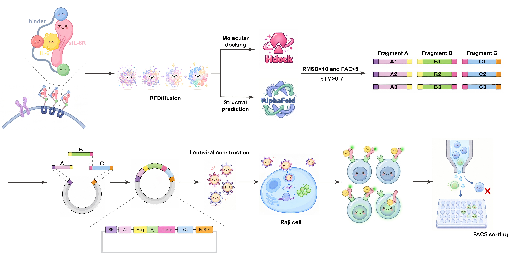

Preface
炎症是机体应对感染和组织损伤的重要防御反应，其强度和持续时间受到免疫系统的严格调控。多种细胞因子既参与宿主防御、组织修复和免疫稳态维持，又可在持续产生或异常激活时驱动慢性炎症和组织损伤。因此，炎症调控并不只是降低某一种炎症介质的水平，更重要的是区分同一分子介导的生理性和病理性信号，并选择性削弱疾病相关的信号输出。白细胞介素-6（interleukin-6, IL-6）正是这种功能分化最为典型的细胞因子之一。IL-6通过两种不同的信号方式发挥作用，其中，经典信号（classical signalling）依赖膜结合型IL-6受体α（membrane-bound IL-6 receptor α, mIL-6Rα），主要存在于少数免疫细胞和肝细胞等特定细胞群中；而反式信号（trans-signalling）则通过IL-6与可溶性IL-6Rα（soluble IL-6 receptor α, sIL-6Rα）形成复合物后募集广泛表达的gp130，从而突破mIL-6Rα表达范围的限制，将IL-6应答扩展至更多细胞类型，并参与炎症细胞募集、血管内皮激活、纤维化及慢性炎症的维持和放大1。经典信号与反式信号在作用细胞和生物学效应上的差异，使选择性调控IL-6的不同信号模式成为控制炎症而保留其生理功能的重要切入点。这一特征决定了对IL-6信号通路的干预不能简单等同于阻断IL-6本身。现有靶向IL-6或IL-6R的阻断策略，例如抗IL-6R单克隆抗体托珠单抗可阻断IL-6与mIL-6R以及sIL-6R结合，因此同时影响经典信号和反式信号2。，继而在抑制病理炎症的同时，也削弱经典IL-6信号参与的生理功能。相比之下，选择性靶向IL-6反式信号有望将炎症放大回路与基础免疫稳态相分离。机制上，IL-6反式信号具有一个可以被选择性识别的结构基础：IL-6与sIL-6Rα结合后形成复合物，并共同构成gp130识别所需的结合表面；随后gp130的募集和二聚化启动JAK/STAT等下游信号3。因此，如果能够直接识别IL-6/sIL-6Rα复合物，并阻断其与gp130结合，就可以在不直接靶向游离IL-6或mIL-6Rα的情况下抑制反式信号。这一策略的关键在于获得能够区分复合物与其游离组分，且对复合物具有足够亲和力以竞争gp130结合的结合分子。

Denovo Design
从头蛋白质设计的发展使针对预定义三维表面的结合蛋白设计成为可能。基于结构生成和序列优化的计算方法能够围绕特定靶表面构建新的蛋白骨架，为识别蛋白质复合物形成后出现的结构表位提供了新的技术基础。然而，从头设计得到的候选分子通常只是功能优化的起点。静态结构上的界面互补并不能完全预测实际生物环境中的结合亲和力、复合物选择性以及对天然受体的竞争能力；同时，人工设计蛋白还必须满足折叠、表达、稳定性和细胞环境适应性等多重约束。因此，在计算设计获得初始骨架后，仍需要一种能够持续产生序列多样性，并在哺乳动物细胞环境中接受功能选择的进化体系，使候选分子进一步跨越由结构可行性到生物学功能之间的差距4。

B cell
B细胞天然的体细胞高频突变（somatic hypermutation，SHM）及其驱动的抗体亲和力成熟，是适应性免疫中经典的分子进化过程。


AID
生发中心反应中，激活诱导的胞嘧啶脱氨酶（activation-induced cytidine deaminase，AID）在免疫球蛋白可变区持续引入高频突变，产生具有不同抗原结合能力的B细胞克隆，随后通过抗原依赖的选择和克隆扩增逐步富集高亲和力变体。该过程将序列多样化、功能选择和克隆扩增连续耦联于哺乳动物细胞中，为人工蛋白的定向进化提供了天然的免疫学基础5。因此，将这一经典的B细胞抗体进化机制重新定向至人工设计序列，有望进一步优化从头设计蛋白的亲和力和功能。